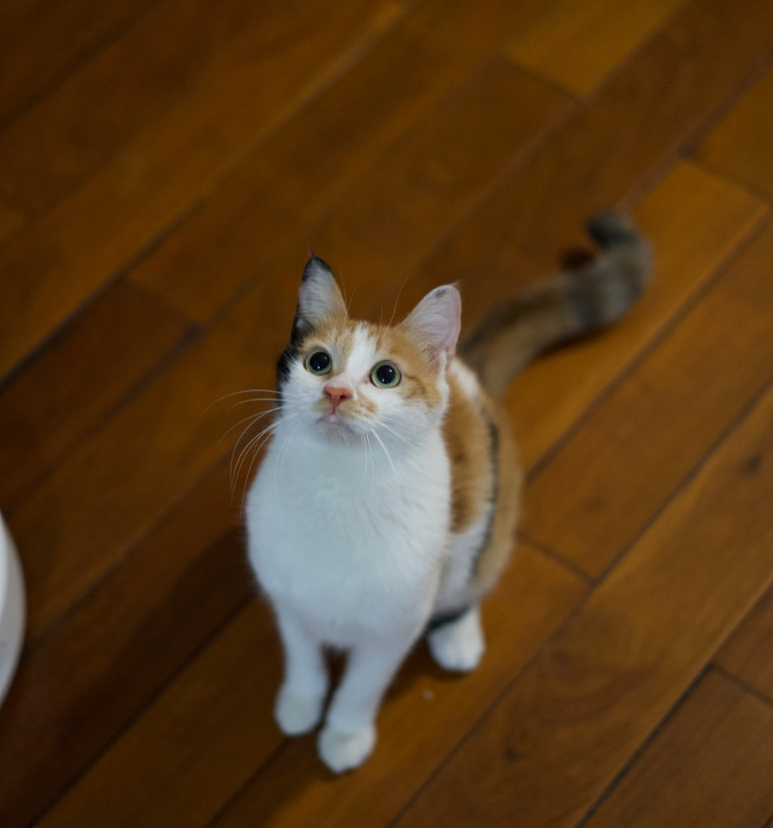

This site is hosted by Pauke Huang, and the site title “IFF” is the abbreviation of “Initiative, Freiheit, Fortschritt | Initiative, Liberty, Progress”(yep, I got inspired fromLiberté, Égalité, Fraternité), which is my motto and what I intent to express in this blog’s articles.
What kind of post does this site contain
The core principle of my writing place, this site, is ,or I manage to be, about:
Initiative, eine Anregung, die jemand hat oder durch etwas ändert.(the power that guy has or is with to change things)
Freiheit, die Möglichkeit, sich frei und ungehindert zu bewegen.(the possible way is going forward without barrier)
Fortschritt, positive und unbekante Weiterentwicklung.(positive and unknown development)
The left part of the title “ 自留地 ”(individual reservation part) means, the posts in here are not so formal, but are more about the ephemeral thoughts and immaturity ideals. Mostly, it is a place to try how long and how much can I continually write.
More specific, I might write the topic in here with:
- data analysis thought related;
- data analysis tools things, most is by R;
- work related, financial risk controlling things;
- thoughts about public issues;
- other habits things,such as history, language, biology, science stuffs(I’m a curious guy)
Why does this site exist
I’m totally aware about how continually writing can shape and improve a person’s mind and ability, and I have done a couple trying before on CSDN and Zhihu. But like most usual users of these platforms, I don’t have insisted the writing plan continually, and only left a little couple of posts.
Inspecting my quitting continually writing reasons before, it might be like this:
- not enough motivation. Most of above posts came from my impulsive thoughts, and the thought came so hurried as the way it gone.
- not enough approaching way. Writing is just a huge hard work before I get used to, just as the same way I do gym. And I just don’t know how to cultivate this custom at the beginning.
- not enough contents storage. Actually I don’t feel so harsh short before I really continually write. But I’m sure it will encounter me in days.
The change came on when I read this article. It is about, how high a man can reach depends on how hard he wanna push forward and the the importance of writing ability.Most important things here is that it shows the approaching way, writing a post over one thousand word daily, to beginning the continual writing. Yep, it is so rugged but also so simple.
After finishing the first period entering the career, I’m getting more unsatisfied about what I can make and how far I can reach. And I’m also getting more unease about my position in the career market upon years going by. All of these feeling get together to be a intensive motivation to change from myself(selbst).
To make sure how I intent to do, I urge myself to start with a rough way, building this blog site by myself. And all the effort in this way just makes me sure that I must hold me on.
Other things about this site
The specific site building is all in this post, if you, the reader, have more question,help yourself, just leave the message under the post.
As for the language of this site, it all depends on which one makes me more comfortable to express, when I manage to write. My priority is 汉语, English and Deutsch.
The way you can find me
 _______________Looking forward to your respond!_______________